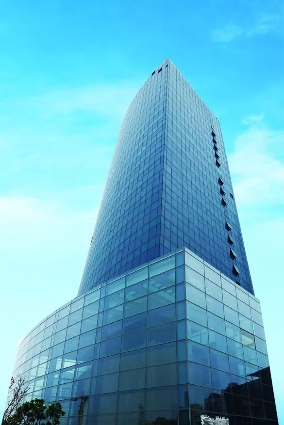
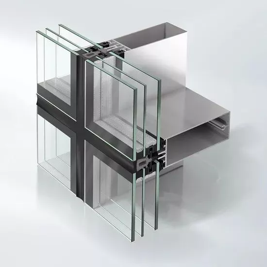

Unitized Façade Curtain Wall System


A Unitized Curtain Wall System is a modern façade solution in which large curtain wall panels are completely fabricated, glazed, and quality-tested in a factory before being transported to the site. These pre-assembled units are then installed onto the building structure using anchors and brackets, significantly reducing on-site work.